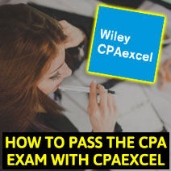

- Updated
- Bryan Kesler, CPA
- CPA Review Courses
-
- The Nine Steps To Passing The CPA Exam With Wiley CPAexcel
- Passing The CPA Exam With Wiley CPAexcel [Bonus Video]
- How Many Weeks To Study Per CPA Exam Section?
- Wiley CPAexcel Daily CPA Exam Study Stream
- Wiley CPAexcel Final Review Study Funnel
- Wiley CPAexcel [Things To Avoid]
- Other Recommended Reading

9 Steps To Passing the CPA Exam With Wiley CPAexcel [2021 Tutorial]
Step 1: Schedule 8-12 weeks max per section to study
Step 2: Avoid the pre-assessment quiz
Step 3: Either watch the lectures OR read the text (not both)
Step 4: Implement a Daily Study Stream for the first 8-10 weeks of your learning phase spliting learning and reviewing 80/20.
Step 5: Review using targeted practice exams and flashcards
Step 6: Implement a Final Review Study Funnel in the final 2 weeks before each exam
Step 7: Use Wiley CPAexcel's filter by "Performance By Topic" to identify where to spend your time
Step 8: Save the extra Wiley CPAexcel test bank for your final review so that you are studying with fresh questions
Step 9: For any topic or CPA exam question that you are spinning your wheels on, outsource it to the Wiley CPAexcel customer support team.
Click Below To Learn How To Pass The CPA Exam With Wiley CPAexcel [2021 Tutorial]
Are you studying for the CPA exam with Wiley CPAexcel Review Course (or a similar CPA review course)?
Then you are in the right place!
Today I will show you exactly how to pass the CPA exam with Wiley CPAexcel (or a similar review course), what features are important and what to avoid while studying.
What you are about to learn is not for the faint of heart, you need to be 100% dedicated to the process and willing to make the necessary sacrifices in your personal life to get this done.
Most importantly, everything I am about to share is proven to work (as evidenced by the fact I passed the CPA exam using these tactics and have successfully taught them to my students).
So no theory here or what I "think" will work for you.
Only proven tips and tricks that have stood the test of time.
Unfortunately there is no shortcut to passing the CPA exam, only hard work, determination and a lavish supply of alcohol laced with caffeine. 😁
Let's get started!
Click Below To Learn How To Pass The CPA Exam With Wiley CPAexcel [2021 Tutorial]
The Nine Steps To Passing The CPA Exam With Wiley CPAexcel
Step 1: Schedule 8-12 Weeks Max Per Section
Step 2: Avoid the pre-assessment quiz
Step 3: Either watch the lectures OR read the text (not both)
Step 4: Implement CPA exam study loops for the first 8-10 weeks of your learning phase spliting learning and reviewing 90/10.
Step 5: Review using targeted practice exams and flashcards
Step 6: Implement a Final Review Study Funnel in the final 2 weeks before each exam
Step 7: Use Wiley CPAexcel's filter by "Performance By Topic" to identify where to spend your time
Step 8: Save the extra Wiley CPAexcel test bank for your final review so that you are studying with fresh questions
Step 9: For any topic or CPA exam question that you are spinning your wheels on, outsource it to the Wiley CPAexcel customer support team.
Register for our next Wiley CPAexcel masterclass:
- Learn exactly how to pass the CPA Exam with Wiley CPAexcel.
- Learn the steps you need to avoid that will hurt your CPA exam scores.
- Learn every tool you need to have to significantly increase your odds of passing with Wiley CPAexcel.
How Many Weeks To Study Per CPA Exam Section?

When studying for the CPA exam, time is your most valuable resource. and when you look at the amount of information included in Wiley CPAexcel you may start to panic a bit and decide to spend TOO long studying.
This was the biggest mistake I made when I first started studying for the CPA exam. I assumed I should study for 16+ weeks per section.
The end result was that I lacked the intensity necessary to maximize my short term memory and I failed.
When using Wiley CPAexcel I recommend setting your study planner to give you between 6 to 10 weeks on your learning phase or what's called "CPA Exam Study Loops."
More on that in a moment...
Obviously sections like FAR and REG will require more time than AUD and BEC so plan accordingly.
Then regardless of the section you are studying for, you will want to spend between 10-14 days on your final review utilizing a study tactic called a "Final Review Study Funnel."
More on that in a moment as well!
If you'd like help implementing study loops & study funnels with Wiley CPAexcel, then register for our free Wiley CPAexcel training class below:

Best Wiley CPAexcel Discount
OVERALL RATING: ★★★★★
SAVE UP TO $1200 Off Wiley CPAexcel Ultimate For Limited Time
GET DISCOUNT
Wiley CPAexcel + CPA Exam Study Loops
Depending on the section of the CPA exam you are studying for I highly recommend spending no more than 10 weeks on the learning phase (ideally 8 weeks).
The reason for this is because by the end of 8-10 weeks, if you aren't studying properly you will start to forget everything that you learned in week 1, 2 3 etc...
The last thing you want to do is to spend substantial time during your final review re-teaching yourself concepts.
This is why you need to follow what's a called a CPA Exam Study Loop.
It's a study tactic that I used to pass the CPA exam and one that I teach to my students in my premium CPA exam coaching course, Ultimate CPA Exam Guide.
A CPA Exam Study Loops is a mixture of learning and reviewing on a daily basis.
I recommend that however many hours you spend studying per week that you spend 80% learning and 20% reviewing.
So if you study for 20 hours per week, spend 16-17 hours watching lectures, answering the practice quizzes & simulations, reading the text and so forth.
Then during the week spend about 2-3 hours reviewing everything you have learned up to that point.
I recommend you utilize Wiley CPAexcel's test bank to take practice exams over everything you have learned to date plus throw in some flashcard review.
You can also review your notes, re-watch video lectures or re-read your text as well.
The key here is to constantly be learning and constantly reviewing so that everything stays fresh.
If you are feeling overwhelmed with this process, then please register for my free training class for Wiley CPAexcel and I can show you exactly how this works.
Use the button below to register for the next available class:
Wiley CPAexcel Final Review Study Funnel

Once you complete the Daily Study Stream Phase, the fun really gets started.
We get to start a Final Review Study Funnel!
And no we aren't talking about beer bongs here, I tried those already and I can assure you they don't mix well with the CPA exam 😉
A Final Review Study Funnel is a study tactic that I teach in my premium Ultimate CPA Exam Guide coaching course that is a series of tests that you run within Wiley CPAexcel that will help you identify what you know (and what you don't know).
By taking practice exams and identifying via multiple choice analytics where your strengths lie, you can easily identify your weaknesses.
These weaknesses will be where you spend your time during this 10-14 days process.
When using Wiley CPAexcel, I recommend filtering your results by "Performance By Topic."
This will allow you to easily identify your weaknesses and give you an easy way to access those topics, setup topic specific practice exams and practice those flashcards.
If you have invested in the Platinum CPAexcel course package, I also recommend saving the extra test bank for this phase of your studying.
It's crucial to have fresh multiple choice questions that you haven't seen before during this phase so you don't risk memorizing answers.
I dig deeper into all of this in a class that I recently published that will walk you through how to pass the CPA exam in the next six months with Wiley CPAexcel.
Here's the registration link if you want to learn more
Wiley CPAexcel [Things To Avoid]
Wiley CPAexcel has an ENORMOUS amount of information in it, which can overwhelm even the most talented CPA candidates.
This is why it's crucial to filter out the study resources offered by CPAexcel that don't cater to how you learn best or more specifically your study personality.
For example, if you are more of a self-studier like myself then it's a better use of your time to skip the lectures and start in the textbook and absorb the information by reading and then taking practice exams.
If you are more of an auditory learner then watch the lecture first and then dive into the practice quizzes.
Wiley CPAexcel's video lectures essentially walk you through the textbook so there is no sense in doing both when you first touch a topic. It's the same information just delivered in a different method.
Wiley CPAexcel has over 110 hours of video lectures and it will likely take you close to that amount of time to cover the text as well.
Pick the delivery method that works best for your study personality and you will be well on your way to getting through the information twice as fast and not getting as overwhelmed.
If you don't know your study personality, here's a free quiz you can take to identify where you lie.
Start The CPA Study Personality Quiz Here
Another item you can skip is the "pre-assessment" practice exam.
When studying for the CPA exam, I found it best to assume that I didn't know anything.
Honestly answering 5-10 questions right or wrong doesn't necessarily prove that you know or don't understand anything.
To me it's a better use of your time to dive into the video lecture or textbook right off the bat and skip the pre-assessment.
Here's why.
If you take the pre-assessment quiz and end up guessing and get some answers correct, you will make the assumption that you have these topics downpat and not take them as seriously.
The key to passing the CPA exam with Wiley CPAexcel is to ensure that you understand the material so that you can apply that knowledge to any question the AICPA throws at you.
If you aren't sure how to gain an understanding of the material you study then register for our next Wiley CPAexcel training class below:
The final mistake you will want to avoid when studying with Wiley CPAexcel is to avoid spinning your wheels.
If you come across a question or a topic that just doesn't make sense.
Write it down and start a list of questions.
Then once you have 4 or 5, shoot the Wiley CPAexcel customer support an email with your batched questions.
Let them do the research so you don't have too!
This will save you countless hours of wasted time.
Best Wiley CPAexcel Discount
OVERALL RATING: ★★★★★
SAVE UP TO $1200 Off Wiley CPAexcel Ultimate For Limited Time
GET DISCOUNT
Other Recommended Reading
Using your CPA review course the RIGHT way is only half the battle. Here are other resources that you can use to cover everything else you need to know about passing the CPA exam.
How To Sign Up For The CPA Exam (The Right Way)
If you don't sign up for the CPA exam the right way, it can lock you into a downward spiral of frustration. Use the link above to ensure you get it done right the first time around.
Compare The Top 14 CPA Review Courses
Make sure that Wiley CPAexcel is the right course for you by comparing it to the 13 other CPA review courses that are currently available to use.
17 Proven CPA Exam Study Strategies While Working Full Time
Most CPA candidates are working while studying for the CPA exam. This is a disaster in the making :)
Use these 17 strategies that I used to pass the CPA exam while working full time (without losing my mind).
21 Best CPA Exam Study Tips & Strategies To Implement Today To Pass The CPA Exam
The 21 study tips you will learn from the link above will not only sharpen your test taking skills but help you navigate your personal, work and social life. Don't become a hermit. Make the CPA exam a social event and get your friends and family involved!
My Journey To Retaking And Recovering From Failing FAR, REG, AUD & BEC Sections Of The CPA Exam
Failing the CPA exam is unfortunately a reality of life as only 20% of CPA candidates can escape unscathed by this beast of an exam.
If you aren't prepared for failing then you are setting yourself up for CPA exam depression if the worst happens.
Use the link above to prepare and if you have failed the CPA exam in the past, you this guide to recover.
Want to learn more about Wiley CPAexcel and how it compares to other CPA review courses? Here's some additional resources:
Wiley CPAexcel vs Becker CPA Review
Wiley CPAexcel vs UWorld Roger CPA Review
My Full Review of Wiley CPAexcel
Exclusive Wiley CPAexcel Coupon Codes
Interested In Learning More About My CPA Exam Mentoring Services? Here's My Best Stuff!
Free CPA Exam Study Personality Quiz
Free CPA Exam Mentoring Class - Register Here
Free CPA Exam Study Guide - Amazon Link
Best of luck Future CPA!
Feel free to share this article with anyone you know who is using Wiley CPAexcel (or thinking about it)
Cheers
Bryan "CPA nerd" Kesler, CPA